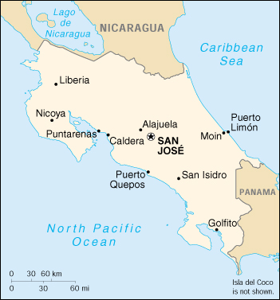

|
Costa Rica | |
| Introduction Geography People Government Economy Communications Transportation Military Transnational Issues | ||
|  | ||
| Costa Rica | Introduction | Top of Page |
| Background: | Costa Rica is a Central American success story: since the late 19th century, only two brief periods of violence have marred its democratic development. Although still a largely agricultural country, it has achieved a relatively high standard of living. Land ownership is widespread. Tourism is a rapidly expanding industry. |
| Costa Rica | Geography | Top of Page |
| Location: | Middle America, bordering both the Caribbean Sea and the North Pacific Ocean, between Nicaragua and Panama |
| Geographic coordinates: | 10 00 N, 84 00 W |
| Map references: | Central America and the Caribbean |
| Area: |
total:
51,100 sq km
land: 50,660 sq km water: 440 sq km note: includes Isla del Coco |
| Area - comparative: | slightly smaller than West Virginia |
| Land boundaries: |
total:
639 km
border countries: Nicaragua 309 km, Panama 330 km |
| Coastline: | 1,290 km |
| Maritime claims: |
exclusive economic zone:
200 NM
territorial sea: 12 NM |
| Climate: | tropical and subtropical; dry season (December to April); rainy season (May to November); cooler in highlands |
| Terrain: | coastal plains separated by rugged mountains |
| Elevation extremes: |
lowest point:
Pacific Ocean 0 m
highest point: Cerro Chirripo 3,810 m |
| Natural resources: | hydropower |
| Land use: |
arable land:
6%
permanent crops: 5% permanent pastures: 46% forests and woodland: 31% other: 12% (1993 est.) |
| Irrigated land: | 1,200 sq km (1993 est.) |
| Natural hazards: | occasional earthquakes, hurricanes along Atlantic coast; frequent flooding of lowlands at onset of rainy season and landslides; active volcanoes |
| Environment - current issues: | deforestation and land use change, largely a result of the clearing of land for cattle ranching and agriculture; soil erosion; water pollution (rivers); coastal marine pollution; wetlands degradation; fisheries protection; solid waste management; air pollution |
| Environment - international agreements: |
party to:
Biodiversity, Climate Change, Desertification, Endangered Species, Environmental Modification, Hazardous Wastes, Law of the Sea, Marine Dumping, Nuclear Test Ban, Ozone Layer Protection, Wetlands, Whaling
signed, but not ratified: Climate Change-Kyoto Protocol, Marine Life Conservation |
| Costa Rica | People | Top of Page |
| Population: | 3,773,057 (July 2001 est.) |
| Age structure: |
0-14 years:
31.38% (male 605,728; female 578,128)
15-64 years: 63.37% (male 1,209,084; female 1,181,754) 65 years and over: 5.25% (male 92,314; female 106,049) (2001 est.) |
| Population growth rate: | 1.65% (2001 est.) |
| Birth rate: | 20.27 births/1,000 population (2001 est.) |
| Death rate: | 4.3 deaths/1,000 population (2001 est.) |
| Net migration rate: | 0.53 migrant(s)/1,000 population (2001 est.) |
| Sex ratio: |
at birth:
1.05 male(s)/female
under 15 years: 1.05 male(s)/female 15-64 years: 1.02 male(s)/female 65 years and over: 0.87 male(s)/female total population: 1.02 male(s)/female (2001 est.) |
| Infant mortality rate: | 11.18 deaths/1,000 live births (2001 est.) |
| Life expectancy at birth: |
total population:
76.02 years
male: 73.49 years female: 78.68 years (2001 est.) |
| Total fertility rate: | 2.47 children born/woman (2001 est.) |
| HIV/AIDS - adult prevalence rate: | 0.54% (1999 est.) |
| HIV/AIDS - people living with HIV/AIDS: | 12,000 (1999 est.) |
| HIV/AIDS - deaths: | 750 (1999 est.) |
| Nationality: |
noun:
Costa Rican(s)
adjective: Costa Rican |
| Ethnic groups: | white (including mestizo) 94%, black 3%, Amerindian 1%, Chinese 1%, other 1% |
| Religions: | Roman Catholic 76.3%, Evangelical 13.7%, other Protestant 0.7%, Jehovah's Witnesses 1.3%, other 4.8%, none 3.2% |
| Languages: | Spanish (official), English spoken around Puerto Limon |
| Literacy: |
definition:
age 15 and over can read and write
total population: 94.8% male: 94.7% female: 95% (1995 est.) |
| Costa Rica | Government | Top of Page |
| Country name: |
conventional long form:
Republic of Costa Rica
conventional short form: Costa Rica local long form: Republica de Costa Rica local short form: Costa Rica |
| Government type: | democratic republic |
| Capital: | San Jose |
| Administrative divisions: | 7 provinces (provincias, singular - provincia); Alajuela, Cartago, Guanacaste, Heredia, Limon, Puntarenas, San Jose |
| Independence: | 15 September 1821 (from Spain) |
| National holiday: | Independence Day, 15 September (1821) |
| Constitution: | 7 November 1949 |
| Legal system: | based on Spanish civil law system; judicial review of legislative acts in the Supreme Court; has accepted compulsory ICJ jurisdiction |
| Suffrage: | 18 years of age; universal and compulsory |
| Executive branch: |
chief of state:
President Miguel Angel RODRIGUEZ (since 8 May 1998); First Vice President Astrid FISCHEL Volio (since 8 May 1998), Second Vice President Elizabeth ODIO Benito (since 8 May 1998); note - president is both the chief of state and head of government
head of government: President Miguel Angel RODRIGUEZ (since 8 May 1998); First Vice President Astrid FISCHEL Volio (since 8 May 1998), Second Vice President Elizabeth ODIO Benito (since 8 May 1998); note - president is both the chief of state and head of government cabinet: Cabinet selected by the president elections: president and vice presidents elected on the same ticket by popular vote for four-year terms; election last held 1 February 1998 (next to be held 3 February 2002) election results: Miguel Angel RODRIGUEZ elected president; percent of vote - Miguel Angel RODRIGUEZ (PUSC) 46.6%, Jose Miguel CORRALES (PLN) 44.6% |
| Legislative branch: |
unicameral Legislative Assembly or Asamblea Legislativa (57 seats; members are elected by direct, popular vote to serve four-year terms)
elections: last held 1 February 1998 (next to be held 3 February 2002) election results: percent of vote by party - PUSC 41%, PLN 35%, minority parties 24%; seats by party - PUSC 27, PLN 23, minority parties 7 |
| Judicial branch: | Supreme Court or Corte Suprema (22 justices are elected for eight-year terms by the Legislative Assembly) |
| Political parties and leaders: |
Agricultural Labor Action or PALA [Carlos Alberto SOLIS Blanco]; Costa Rican Renovation Party or PRC [Justo OROZCO]; Democratic Force Party or PFD [Jose M. NUNEZ]; Libertarian Movement Party or PML [Otto GUEVARA Guth]; National Christian Alliance Party or ANC [Alejandro MADRIGAL]; National Independent Party or PNI [Jorge GONZALEZ Marten]; National Integration Party or PIN [Walter MUNOZ Cespedes]; National Liberation Party or PLN [Sonia PICADO]; Social Christian Unity Party or PUSC [Luis Manuel CHACON]
note: mainly a two-party system - PUSC and PLN; numerous small parties share less than 25% of population's support |
| Political pressure groups and leaders: | Authentic Confederation of Democratic Workers or CATD (Communist Party affiliate); Chamber of Coffee Growers; Confederated Union of Workers or CUT (Communist Party affiliate); Costa Rican Confederation of Democratic Workers or CCTD (Liberation Party affiliate); Federation of Public Service Workers or FTSP; National Association for Economic Development or ANFE; National Association of Educators or ANDE; Rerum Novarum or CTRN (PLN affiliate) [Gilbert Brown] |
| International organization participation: | BCIE, CACM, ECLAC, FAO, G-77, IADB, IAEA, IBRD, ICAO, ICFTU, ICRM, IDA, IFAD, IFC, IFRCS, ILO, IMF, IMO, Inmarsat, Intelsat, Interpol, IOC, IOM, ISO, ITU, LAES, LAIA (observer), NAM (observer), OAS, OPANAL, OPCW, PCA, UN, UNCTAD, UNESCO, UNIDO, UNU, UPU, WCL, WFTU, WHO, WIPO, WMO, WToO, WTrO |
| Diplomatic representation in the US: |
chief of mission:
Ambassador Jaime DAREMBLUM Rosenstein
chancery: 2114 S Street NW, Washington, DC 20008 telephone: [1] (202) 234-2945 FAX: [1] (202) 265-4795 consulate(s) general: Atlanta, Boston, Chicago, Denver, Houston, Los Angeles, Miami, New Orleans, New York, Phoenix, San Antonio, San Francisco, St. Paul, and Tampa consulate(s): Austin |
| Diplomatic representation from the US: |
chief of mission:
Ambassador Thomas J. DODD
embassy: Calle 120 Avenida O, Pavas, San Jose mailing address: APO AA 34020 telephone: [506] 220-3939 FAX: [506] 220-2305 |
| Flag description: | five horizontal bands of blue (top), white, red (double width), white, and blue, with the coat of arms in a white disk on the hoist side of the red band |
| Costa Rica | Economy | Top of Page |
| Economy - overview: | Costa Rica's basically stable economy depends on tourism, agriculture, and electronics exports. Poverty has been substantially reduced over the past 15 years, and a strong social safety net has been put into place. Foreign investors remain attracted by the country's political stability and high education levels, and tourism continues to bring in foreign exchange. However, traditional export sectors have not kept pace. Low coffee prices and an overabundance of bananas have hurt the agricultural sector. The government continues to grapple with its large deficit and massive internal debt and with the need to modernize the state-owned electricity and telecommunications sector. |
| GDP: | purchasing power parity - $25 billion (2000 est.) |
| GDP - real growth rate: | 3% (2000 est.) |
| GDP - per capita: | purchasing power parity - $6,700 (2000 est.) |
| GDP - composition by sector: |
agriculture:
12.5%
industry: 30.7% services: 56.8% (1999) |
| Population below poverty line: | 20.6% (1999 est.) |
| Household income or consumption by percentage share: |
lowest 10%:
1.3%
highest 10%: 34.7% (1996) |
| Inflation rate (consumer prices): | 11% (2000 est.) |
| Labor force: | 1.9 million (1999) |
| Labor force - by occupation: | agriculture 20%, industry 22%, services 58% (1999 est.) |
| Unemployment rate: | 5.2% (2000 est.) |
| Budget: |
revenues:
$1.95 billion
expenditures: $2.4 billion, including capital expenditures of $NA (2000 est.) |
| Industries: | microprocessors, food processing, textiles and clothing, construction materials, fertilizer, plastic products |
| Industrial production growth rate: | 4.3% (2000) |
| Electricity - production: | 5.805 billion kWh (1999) |
| Electricity - production by source: |
fossil fuel:
2.41%
hydro: 83.32% nuclear: 0% other: 14.27% (1999) |
| Electricity - consumption: | 5.303 billion kWh (1999) |
| Electricity - exports: | 165 million kWh (1999) |
| Electricity - imports: | 69 million kWh (1999) |
| Agriculture - products: | coffee, pineapples, bananas, sugar, corn, rice, beans, potatoes; beef; timber |
| Exports: | $6.1 billion (f.o.b., 2000 est.) |
| Exports - commodities: | coffee, bananas, sugar; pineapples; textiles, electronic components, medical equipment |
| Exports - partners: | US 54.1%, EU 21.3%, Central America 8.6% (1999) |
| Imports: | $5.9 billion (f.o.b., 2000 est.) |
| Imports - commodities: | raw materials, consumer goods, capital equipment, petroleum |
| Imports - partners: | US 56.4%, EU 9%, Mexico 5.4%, Japan 4.7%, (1999) |
| Debt - external: | $4.2 billion (2000 est.) |
| Currency: | Costa Rican colon (CRC) |
| Currency code: | CRC |
| Exchange rates: | Costa Rican colones per US dollar - 318.95 (2001), 308.19 (2000), 285.68 (1999), 257.23 (1998), 232.60 (1997), 207.69 (1996) |
| Fiscal year: | calendar year |
| Costa Rica | Communications | Top of Page |
| Telephones - main lines in use: |
450,000 (1998)
note: 584,000 installed in 1997, but only about 450,000 were in use 1998 |
| Telephones - mobile cellular: | 143,000 (2000) |
| Telephone system: |
general assessment:
very good domestic telephone service
domestic: point-to-point and point-to-multi-point microwave, fiber-optic, and coaxial cable link rural areas; Internet service is available international: connected to Central American Microwave System; satellite earth stations - 2 Intelsat (Atlantic Ocean); two submarine cables (1999) |
| Radio broadcast stations: | AM 50, FM 43, shortwave 19 (1998) |
| Radios: | 980,000 (1997) |
| Television broadcast stations: | 6 (plus 11 repeaters) (1997) |
| Televisions: | 525,000 (1997) |
| Internet country code: | .cr |
| Internet Service Providers (ISPs): | 3 (of which only one is legal) (2000) |
| Internet users: | 150,000 (2000) |
| Costa Rica | Transportation | Top of Page |
| Railways: |
total:
950 km
narrow gauge: 950 km 1.067-m gauge (260 km electrified) (2000) |
| Highways: |
total:
37,273 km
paved: 7,827 km unpaved: 29,446 km (1998 est.) |
| Waterways: | 730 km (seasonally navigable) |
| Pipelines: | petroleum products 176 km |
| Ports and harbors: | Caldera, Golfito, Moin, Puerto Limon, Puerto Quepos, Puntarenas |
| Merchant marine: |
total:
1 ship (1,000 GRT or over) totaling 1,716 GRT/NA DWT
ships by type: passenger 1 (2000 est.) |
| Airports: | 152 (2000 est.) |
| Airports - with paved runways: |
total:
29
2,438 to 3,047 m: 2 1,524 to 2,437 m: 1 914 to 1,523 m: 19 under 914 m: 7 (2000 est.) |
| Airports - with unpaved runways: |
total:
123
914 to 1,523 m: 28 under 914 m: 95 (2000 est.) |
| Costa Rica | Military | Top of Page |
| Military branches: |
Coast Guard, Air Section, Ministry of Public Security Force (Fuerza Publica)
note: Costa Rica has no military, only domestic police forces, including the Coast Guard and Air Section |
| Military manpower - military age: | 18 years of age |
| Military manpower - availability: | males age 15-49: 1,035,090 (2001 est.) |
| Military manpower - fit for military service: | males age 15-49: 692,973 (2001 est.) |
| Military manpower - reaching military age annually: | males: 39,411 (2001 est.) |
| Military expenditures - dollar figure: | $69 million (FY99) |
| Military expenditures - percent of GDP: | 1.6% (FY99) |
| Costa Rica | Transnational Issues | Top of Page |
| Disputes - international: | legal dispute over navigational rights of Rio San Juan on border with Nicaragua |
| Illicit drugs: | transshipment country for cocaine and heroin from South America; illicit production of cannabis on small, scattered plots; domestic cocaine consumption is rising, particularly crack cocaine; those who previously only trafficked are now becoming users |
{kind=link}
{kind=link}